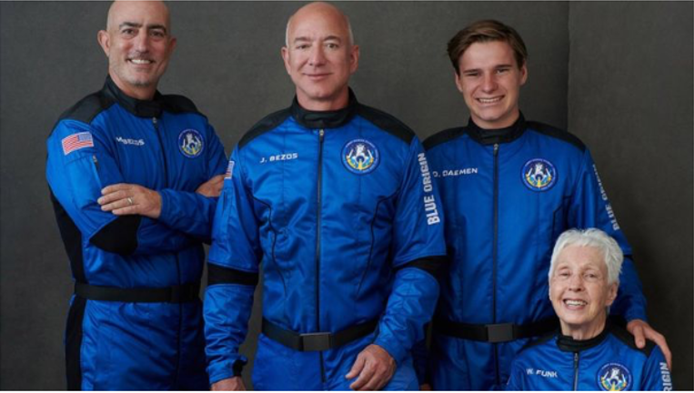
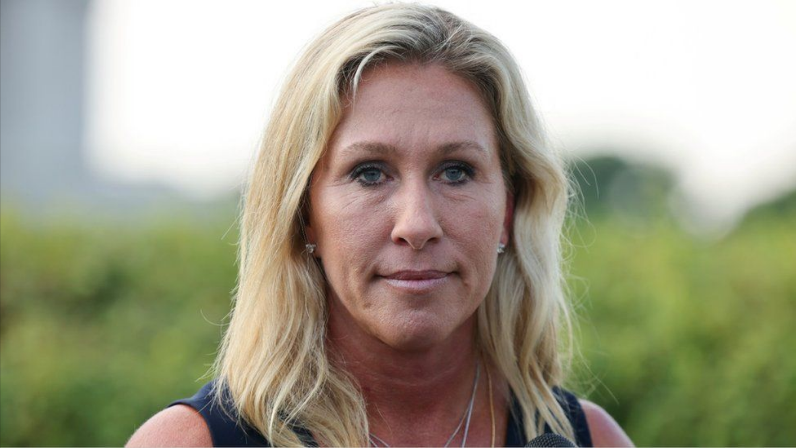

Tech

Jeff Bezos to blast into space aboard rocket ship
Billionaire Jeff Bezos will launch into space in the first crewed flight of his rocket ship.

|

Twitter suspends US congresswoman over Covid posts Georgia Republican Marjorie Taylor Greene has been a vocal critic of vaccines and the use of masks.
|

A weekend in America: Shootings shock capital city A stadium was sent into panic and a six-year-old was killed in two of the weekend's worst shootings.
|
UK PM 'resisted lockdown as only over-80s dying' Boris Johnson was reluctant to tighten Covid restrictions, former aide Dominic Cummings tells the BBC.
|